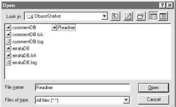
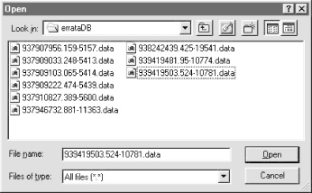

| I l@ve RuBoard |
|
14.6 PyErrata Database InterfacesNow that we've seen the user interfaces and top-level implementations of browse and submit operations, this section proceeds down one level of abstraction to the third and last major functional area in the PyErrata system. Compared to other systems in this part of the book, one of the most unique technical features of PyErrata is that it must manage persistent data. Information posted by readers needs to be logged in a database for later review. PyErrata stores reports as dictionaries, and includes logic to support two database storage mediums -- flat pickle files and shelves -- as well as tools for synchronizing data access. 14.6.1 The Specter of Concurrent UpdatesThere is a variety of ways for Python scripts to store data persistently: files, object pickling, object shelves, real databases, and so on. In fact, Chapter 16 is devoted exclusively to this topic and provides more in-depth coverage than we require here.[3] Those storage mediums all work in the context of server-side CGI scripts too, but the CGI environment almost automatically introduces a new challenge: concurrent updates. Because the CGI model is inherently parallel, scripts must take care to ensure that database writes and reads are properly synchronized to avoid data corruption and incomplete records.
Here's why. With PyErrata, a given reader may visit the site and post a report or view prior posts. But in the context of a web application, there is no way to know how many readers may be posting or viewing at once: any number of people may press a form's submit button at the same time. As we've seen, form submissions generally cause the HTTP server to spawn a new process to handle the request. Because these handler processes all run in parallel, if one hundred users all press submit at the same time, there will be one hundred CGI script processes running in parallel on the server, all of which may try to update (or read) the reports database at the same time. Due to all this potential parallel traffic, server-side programs that maintain a database must somehow guarantee that database updates happen one at a time, or the database could be corrupted. The likelihood of two particular scenarios increases with the number of site users:
Constraints vary per database medium, and while it's generally okay for multiple processes to read a database at the same time, writers (and updates in general) almost always need to have exclusive access to a shared database. There is a variety of ways to make database access safe in a potentially concurrent environment such as CGI-based web sites:
In this section, we implement both of the last two schemes for PyErrata to illustrate concurrent data-access fundamentals. 14.6.2 Database Storage StructureFirst of all, let's get a handle on what the system really stores. If you flip back to Figure 14-1, you'll notice that there are two top-level database directories: DbaseShelve (for the shelve mechanism) and DbaseFiles (for file-based storage). Each of these directories has unique contents. 14.6.2.1 Shelve databaseFor shelve-based databases, the DbaseShelve directory's contents are shown in Figure 14-27. The commentDB and errataDB files are the shelves used to store reports, and the .lck and .log files are lock and log files generated by the system. To start a new installation from scratch, only the two .lck files are needed initially (and can be simply empty files); the system creates the shelve and log files as records are stored. Figure 14-27. PyErrata shelve-based directory contentsWe'll explore the Python shelve module in more detail in the next part of this book, but the parts of it used in this chapter are straightforward. Here are the basic shelve interfaces we'll use in this example: import shelve # load the standard shelve module
dbase = shelve.open('filename') # open shelve (create if doesn't yet exist)
dbase['key'] = object # store almost any object in shelve file
object = dbase['key'] # fetch object from shelve in future run
dbase.keys( ) # list of keys stored in the shelve
dbase.close( ) # close shelve's file
In other words, shelves are like dictionaries of Python objects that are mapped to an external file, and so persist between program runs. Objects in a shelve are stored away and later fetched with a key. In fact, it's not inaccurate to think of shelves as dictionaries that live on after a program exits, and must be explicitly opened. Like dictionaries, each distinct value stored in a shelve must have a unique key. Because there is no field in a comment or errata report that is reliably unique among all reports, we need to generate one of our own. Record submit time is close to being unique, but there is no guarantee that two users (and hence two processes) won't submit a report in the same second. To assign each record a unique slot in the shelve, the system generates a uniquekey string for each, containing the submission time (seconds since the Unix "epoch" as a floating-point value) and the process ID of the storing CGI script. Since the dictionary values stored in the shelve contain all the report information we're interested in, shelve keys need only be unique, not meaningful. Records are loaded by blindly iterating over the shelve's keys list. In addition to generating unique keys for records, shelves must accommodate concurrent updates. Because shelves are mapped to single files in the filesystem (here, errataDB and commentDB), we must synchronize all access to them in a potentially parallel process environment such as CGI scripting. In its current form, the Python shelve module supports concurrent readers but not concurrent updates, so we need to add such functionality ourselves. The PyErrata implementation of the shelve database-storage scheme uses locks on the .lck files to make sure that writers (submit processes) gain exclusive access to the shelve before performing updates. Any number of readers may run in parallel, but writers must run alone and block all other processes -- readers and writers -- while they update the shelve. Notice that we use a separate .lck file for locks, rather than locking the shelve file itself. In some systems, shelves are mapped to multiple files, and in others (e.g., GDBM), locks on the underlying shelve file are reserved for use by the DBM filesystem itself. Using our own lock file subverts such reservations and is more portable among DBM implementations. 14.6.2.2 Flat-file databaseThings are different with the flat-files database medium; Figure 14-28 shows the contents of the file-based errata database subdirectory, DbaseFiles/errataDB. In this scheme, each report is stored in a distinct and uniquely named flat file containing a pickled report-data dictionary. A similar directory exists for comments, DbaseFiles/commentDB. To start from scratch here, only the two subdirectories must exist; files are added as reports are submitted. Figure 14-28. PyErrata file-based directory contentsPython's object pickler converts ("serializes") in-memory objects to and from specially coded strings in a single step, and therefore comes in handy for storing complex objects like the dictionaries PyErrata uses to represent report records.[4] We'll also study the pickle module in depth in Part IV, but its interfaces employed by PyErrata are simple as well:
pickle.dump(object, outputfile) # store object in a file object = pickle.load(inputfile) # load object back from file For flat files, the system-generated key assigned to a record follows the same format as for shelves, but here it is used to name the report's file. Because of that, record keys are more apparent (we see them when listing the directory), but still don't need to convey any real information. They need only be unique for each stored record to yield a unique file. In this storage scheme, records are processed by iterating over directory listings returned by the standard glob.glob call on name pattern *.data (see Chapter 2, for a refresher on the glob module). In a sense, this flat-file approach uses the filesystem as a shelve and relies on the operating system to segregate records as files. It also doesn't need to care much about concurrent access issues; because generated filenames make sure that each report is stored in its own separate file, it's impossible for two submit processes to be writing the same file at once. Moreover, it's okay to read one report while another is being created; they are truly distinct files. We still need to be careful, though, to avoid making a file visible to reader directory listings until it is complete, or else we may read a half-finished file. This case is unlikely in practice -- it can happen only if the writer still hasn't finished by the time the reader gets around to that file in its directory listing. But to avoid problems, submit scripts first write data to a temporary file, and move the temporary file to the real *.data name only after it is complete. 14.6.3 Database SwitchOn to code listings. The first database module, shown in Example 14-13, simply selects between a file-based mechanism and shelve-based mechanism; we make the choice here alone to avoid impacting other files when we change storage schemes. Example 14-13. PP2E\Internet\Cgi-Web\PyErrata\dbswitch.py############################################################ # for testing alternative underlying database mediums; # since the browse, submit, and index cgi scripts import # dbase names from here only, they'll get whatever this # module loads; in other words, to switch mediums, simply # change the import here; eventually we could remove this # interface module altogether, and load the best medium's # module directly, but the best may vary by use patterns; ############################################################ # # one directory per dbase, one flat pickle file per submit # from dbfiles import DbaseErrata, DbaseComment # # one shelve per dbase, one key per submit, with mutex update locks # # from dbshelve import DbaseErrata, DbaseComment 14.6.4 Storage-Specific Classes for Files and ShelvesThe next two modules implement file- and shelve-based database-access objects; the classes they define are the objects passed and used in the browse and submit scripts. Both are really just subclasses of the more generic class in dbcommon; in Example 14-14, we fill in methods that define storage scheme-specific behavior, but the superclass does most of the work. Example 14-14. PP2E\Internet\Cgi-Web\PyErrata\dbfiles.py###############################################################
# store each item in a distinct flat file, pickled;
# dbcommon assumes records are dictionaries, but we don't here;
# chmod to 666 to allow admin access (else 'nobody' owns);
# subtlety: unique filenames prevent multiple writers for any
# given file, but it's still possible that a reader (browser)
# may try to read a file while it's being written, if the
# glob.glob call returns the name of a created but still
# incomplete file; this is unlikely to happen (the file
# would have to still be incomplete after the time from glob
# to unpickle has expired), but to avoid this risk, files are
# created with a temp name, and only moved to the real name
# when they have been completely written and closed;
# cgi scripts with persistent data are prone to parallel
# updates, since multiple cgi scripts may be running at once;
###############################################################
import dbcommon, pickle, glob, os
class Dbase(dbcommon.Dbase):
def writeItem(self, newdata):
name = self.dirname + self.makeKey( )
file = open(name, 'w')
pickle.dump(newdata, file) # store in new file
file.close( )
os.rename(name, name+'.data') # visible to globs
os.chmod(name+'.data', 0666) # owned by 'nobody'
def readTable(self):
reports = []
for filename in glob.glob(self.dirname + '*.data'):
reports.append(pickle.load(open(filename, 'r')))
return reports
class DbaseErrata(Dbase):
dirname = 'DbaseFiles/errataDB/'
class DbaseComment(Dbase):
dirname = 'DbaseFiles/commentDB/'
The shelve interface module listed in Example 14-15 provides the same methods interface, but implements them to talk to shelves. Its class also mixes in the mutual-exclusion class to get file locking; we'll study that class's code in a few pages. Notice that this module extends sys.path so that a platform-specific FCNTL module (described later in this chapter) becomes visible to the file-locking tools. This is necessary in the CGI script context only, because the module search path given to CGI user "nobody" doesn't include the platform-specific extension modules directory. Both the file and shelve classes set newly created file permissions to octal 0666, so that users besides "nobody" can read and write. If you've forgotten whom "nobody" is, see earlier discussions of permission and ownership issues in this and the previous two chapters. Example 14-15. PP2E\Internet\Cgi-Web\PyErrata\dbshelve.py########################################################
# store items in a shelve, with file locks on writes;
# dbcommon assumes items are dictionaries (not here);
# chmod call assumes single file per shelve (e.g., gdbm);
# shelve allows simultaneous reads, but if any program
# is writing, no other reads or writes are allowed,
# so we obtain the lock before all load/store ops
# need to chown to 0666, else only 'nobody' can write;
# this file doen't know about fcntl, but mutex doesn't
# know about cgi scripts--one of the 2 needs to add the
# path to FCNTL module for cgi script use only (here);
# we circumvent whatever locking mech the underlying
# dbm system may have, since we acquire alock on our own
# non-dbm file before attempting any dbm operation;
# allows multiple simultaneous readers, but writers
# get exclusive access to the shelve; lock calls in
# MutexCntl block and later resume callers if needed;
########################################################
# cgi runs as 'nobody' without
# the following default paths
import sys
sys.path.append('/usr/local/lib/python1.5/plat-linux2')
import dbcommon, shelve, os
from Mutex.mutexcntl import MutexCntl
class Dbase(MutexCntl, dbcommon.Dbase): # mix mutex, dbcommon, mine
def safe_writeItem(self, newdata):
dbase = shelve.open(self.filename) # got excl access: update
dbase[self.makeKey( )] = newdata # save in shelve, safely
dbase.close( )
os.chmod(self.filename, 0666) # else others can't change
def safe_readTable(self):
reports = [] # got shared access: load
dbase = shelve.open(self.filename) # no writers will be run
for key in dbase.keys( ):
reports.append(dbase[key]) # fetch data, safely
dbase.close( )
return reports
def writeItem(self, newdata):
self.exclusiveAction(self.safe_writeItem, newdata)
def readTable(self):
return self.sharedAction(self.safe_readTable)
class DbaseErrata(Dbase):
filename = 'DbaseShelve/errataDB'
class DbaseComment(Dbase):
filename = 'DbaseShelve/commentDB'
14.6.5 Top-Level Database Interface ClassHere, we reach the top-level database interfaces that our CGI scripts actually call. The class in Example 14-16 is "abstract" in the sense that it cannot do anything by itself. We must provide and create instances of subclasses that define storage-specific methods, rather than making instances of this class directly. In fact, this class deliberately leaves the underlying storage scheme undefined and raises assertion errors if a subclass doesn't fill in the required details. Any storage-specific class that provides writeItem and readTable methods can be plugged into this top-level class's interface model. This includes classes that interface with flat files, shelves, and other specializations we might add in the future (e.g., schemes that talk to full-blown SQL or object databases, or that cache data in persistent servers). In a sense, subclasses take the role of embedded component objects here; they simply need to provide expected interfaces. Because the top-level interface has been factored out to this single class, we can change the underlying storage scheme simply by selecting a different storage-specific subclass (as in dbswitch); the top-level database calls remain unchanged. Moreover, changes and optimizations to top-level interfaces will likely impact this file alone. Since this is a superclass common to storage-specific classes, we also here define record key generation methods and insert common generated attributes (submit date, initial report state) into new records before they are written. Example 14-16. PP2E\Internet\Cgi-Web\PyErrata\dbcommon.py##############################################################
# an abstract superclass with shared dbase access logic;
# stored records are assumed to be dictionaries (or other
# mapping), one key per field; dbase medium is undefined;
# subclasses: define writeItem and readTable as appropriate
# for the underlying file medium--flat files, shelves, etc.
# subtlety: the 'Submit date' field added here could be kept
# as a tuple, and all sort/select logic will work; but since
# these values may be embedded in a url string, we don't want
# to convert from string to tuple using eval in index.cgi;
# for consistency and safety, we convert to strings here;
# if not for the url issue, tuples work fine as dict keys;
# must use fixed-width columns in time string to sort;
# this interface may be optimized in future releases;
##############################################################
import time, os
class Dbase:
# store
def makeKey(self):
return "%s-%s" % (time.time(), os.getpid( ))
def writeItem(self, newdata):
assert 0, 'writeItem must be customized'
def storeItem(self, newdata):
secsSinceEpoch = time.time( )
timeTuple = time.localtime(secsSinceEpoch)
y_m_d_h_m_s = timeTuple[:6]
newdata['Submit date'] = '%s/%02d/%02d, %02d:%02d:%02d' % y_m_d_h_m_s
newdata['Report state'] = 'Not yet verified'
self.writeItem(newdata)
# load
def readTable(self):
assert 0, 'readTable must be customized'
def loadSortedTable(self, field=None): # returns a simple list
reports = self.readTable( ) # ordered by field sort
if field:
reports.sort(lambda x, y, f=field: cmp(x[f], y[f]))
return reports
def loadIndexedTable(self, field):
reports = self.readTable( )
index = {}
for report in reports:
try:
index[report[field]].append(report) # group by field values
except KeyError:
index[report[field]] = [report] # add first for this key
keys = index.keys( )
keys.sort( ) # sorted keys, groups dict
return keys, index
14.6.6 Mutual Exclusion for ShelvesWe've at last reached the bottom of the PyErrata code hierarchy: code that encapsulates file locks for synchronizing shelve access. The class listed in Example 14-17 provides tools to synchronize operations, using a lock on a file whose name is provided by systems that use the class. It includes methods for locking and unlocking the file, but also exports higher-level methods for running function calls in exclusive or shared mode. Method sharedAction is used to run read operations, and exclusiveAction handles writes. Any number of shared actions can occur in parallel, but exclusive actions occur all by themselves and block all other action requests in parallel processes. Both kinds of actions are run in try-finally statements to guarantee that file locks are unlocked on action exit, normal or otherwise. Example 14-17. PP2E\Internet\Cgi-Web\PyErrata\Mutex\mutexcntl.py########################################################
# generally useful mixin, so a separate module;
# requires self.filename attribute to be set, and
# assumes self.filename+'.lck' file already exists;
# set mutexcntl.debugMutexCntl to toggle logging;
# writes lock log messages to self.filename+'.log';
########################################################
import fcntl, os, time
from FCNTL import LOCK_SH, LOCK_EX, LOCK_UN
debugMutexCntl = 1
processType = {LOCK_SH: 'reader', LOCK_EX: 'writer'}
class MutexCntl:
def lockFile(self, mode):
self.logPrelock(mode)
self.lock = open(self.filename + '.lck') # lock file in this process
fcntl.flock(self.lock.fileno( ), mode) # waits for lock if needed
self.logPostlock( )
def lockFileRead(self): # allow > 1 reader: shared
self.lockFile(LOCK_SH) # wait if any write lock
def lockFileWrite(self): # writers get exclusive lock
self.lockFile(LOCK_EX) # wait if any lock: r or w
def unlockFile(self):
self.logUnlock( )
fcntl.flock(self.lock.fileno( ), LOCK_UN) # unlock for other processes
def sharedAction(self, action, *args): # higher level interface
self.lockFileRead( ) # block if a write lock
try:
result = apply(action, args) # any number shared at once
finally: # but no exclusive actions
self.unlockFile( ) # allow new writers to run
return result
def exclusiveAction(self, action, *args):
self.lockFileWrite( ) # block if any other locks
try:
result = apply(action, args) # no other actions overlap
finally:
self.unlockFile( ) # allow new readers/writers
return result
def logmsg(self, text):
if not debugMutexCntl: return
log = open(self.filename + '.log', 'a') # append to the end
log.write('%s\t%s\n' % (time.time( ), text)) # output won't overwrite
log.close( ) # but it may intermingle
def logPrelock(self, mode):
self.logmsg('Requested: %s, %s' % (os.getpid( ), processType[mode]))
def logPostlock(self):
self.logmsg('Aquired: %s' % os.getpid( ))
def logUnlock(self):
self.logmsg('Released: %s' % os.getpid( ))
This file lock management class is coded in its own module by design, because it is potentially worth reusing. In PyErrata, shelve database classes mix it in with multiple inheritance to implement mutual exclusion for database writers. This class assumes that a lockable file exists as name self.filename (defined in client classes) with a .lck extension; like all instance attributes, this name can vary per client of the class. If a global variable is true, the class also optionally logs all lock operations in a file of the same name as the lock, but with a .log extension. Notice that the log file is opened in a append mode; on Unix systems, this mode guarantees that the log file text written by each process appears on a line of its own, not intermixed (multiple copies of this class may write to the log from parallel CGI script processes). To really understand how this class works, though, we need to say more about Python's file-locking interface. 14.6.6.1 Using fcntl.flock to lock filesWhen we studied threads in Chapter 3, we saw that the Python thread module includes a mutual-exclusion lock mechanism that can be used to synchronize threads' access to shared global memory resources. This won't usually help us much in the CGI environment, however, because each database request generally comes from a distinct process spawned by the HTTP server to handle an incoming request. That is, thread locks work only within the same process, because all threads run within a single process. For CGI scripts, we usually need a locking mechanism that spans multiple processes instead. On Unix systems, the Python standard library exports a tool based on locking files, and therefore may be used across process boundaries. All of this magic happens in these two lines in the PyErrata mutex class: fcntl.flock(self.lock.fileno( ), mode) # waits for lock if needed fcntl.flock(self.lock.fileno( ), LOCK_UN) # unlock for other processes The fcntl.flock call in the standard Python library attempts to acquire a lock associated with a file, and by default blocks the calling process if needed until the lock can be acquired. The call accepts a file descriptor integer code (the stdio file object's fileno method returns one for us) and a mode flag defined in standard module FCNTL, which takes one of three values in our system:
In database terms, the net effect is that readers wait only if a write lock is held by another process, and writers wait if any lock is held -- read or write. Though used to synchronize processes, this scheme is more complex and powerful than the simple acquire/release model for locks in the Python thread module, and is different from the class tools available in the higher-level threading module. However, it could be emulated by both these thread modules. fcntl.flock internally calls out to whatever file-locking mechanism is available in the underlying operating system,[5] and therefore you can consult the corresponding Unix or Linux manpage for more details. It's also possible to avoid blocking if a lock can't be acquired, and there are other synchronization tools in the Python library (e.g., "fifos"), but we will ignore such options here.
14.6.6.2 Mutex test scriptsTo help us understand the PyErrata synchronization model, let's get a better feel for the underlying file-locking primitives by running a few simple experiments. Examples Example 14-18 and Example 14-19 implement simple reader and writer processes using the flock call directly instead of our class. They request shared and exclusive locks, respectively. Example 14-18. PP2E\Internet\Cgi-Web\PyErrata\Mutex\testread.py#!/usr/bin/python
import os, fcntl, time
from FCNTL import LOCK_SH, LOCK_UN
print os.getpid(), 'start reader', time.time( )
file = open('test.lck', 'r') # open the lock file for fd
fcntl.flock(file.fileno( ), LOCK_SH) # block if a writer has lock
print os.getpid(), 'got read lock', time.time( ) # any number of readers can run
time.sleep(3)
print 'lines so far:', os.popen('wc -l Shared.txt').read( ),
print os.getpid( ), 'unlocking\n'
fcntl.flock(file.fileno( ), LOCK_UN) # resume blocked writers now
In this simple test, locks on text file test.lck are used to synchronize read and write access to a text file appended by writers. The appended text file plays the role of PyErrata shelve databases, and the reader and writer scripts in Examples Example 14-18 and Example 14-19 stand in for its browse and submit script processes. Example 14-19. PP2E\Internet\Cgi-Web\PyErrata\Mutex\testwrite.py#!/usr/bin/python
import os, fcntl, time
from FCNTL import LOCK_EX, LOCK_UN
print os.getpid(), 'start writer', time.time( )
file = open('test.lck', 'r') # open the lock file
fcntl.flock(file.fileno( ), LOCK_EX) # block if any read or write
print os.getpid(), 'got write lock', time.time( ) # only 1 writer at a time
log = open('Shared.txt', 'a')
time.sleep(3)
log.write('%d Hello\n' % os.getpid( ))
print os.getpid( ), 'unlocking\n'
fcntl.flock(file.fileno( ), LOCK_UN) # resume blocked read or write
To start a set of readers and writers running in parallel, Example 14-20 uses the Unix fork/execl call combination to launch program processes (both calls are described in Chapter 3). Example 14-20. PP2E\Internet\Cgi-Web\PyErrata\Mutex\launch-test.py#!/usr/bin/python
######################################################
# launch test program processes
# run with ./launch-test.py > launch-test.out
# try spawning reader before writer, then writer
# before reader--second process blocks till first
# unlocks in both cases; if launches 2 readers
# initially, both get lock and block writer; if
# launch 2 writers first then 2 readers, 2nd writer
# waits for first, both readers wait for both
# writers, and both readers get lock at same time;
# in test below, the first writer runs, then all
# readers run before any writer; if readers are
# first, all run before any writer; (all on linux)
######################################################
import os
for i in range(1):
if os.fork( ) == 0:
os.execl("./testwrite.py")
for i in range(2): # copy this process
if os.fork( ) == 0: # if in new child process
os.execl("./testread.py") # overlay with test program
for i in range(2):
if os.fork( ) == 0:
os.execl("./testwrite.py") # same, but start writers
for i in range(2):
if os.fork( ) == 0:
os.execl("./testread.py")
for i in range(1):
if os.fork( ) == 0:
os.execl("./testwrite.py")
Comments in this script give the results for running its logic various ways on Linux. Pragmatic note: after copying these files over from Windows in an FTP'd tar file, I first had to give them executable permissions and convert them from DOS to Unix line-feed format before Linux would treat them as executable programs:[6]
[mark@toy .../PyErrata/Mutex]$ chmod +x *.py [mark@toy .../PyErrata/Mutex]$ python $X/PyTools/fixeoln_all.py tounix "*.py" __init__.py launch-mutex-simple.py launch-mutex.py launch-test.py mutexcntl.py testread-mutex.py testread.py testwrite-mutex.py testwrite.py Once they've been so configured as executables, we can run all three of these scripts from the Linux command line. The reader and writer scripts access a Shared.txt file, which is meant to simulate a shared resource in a real parallel application (e.g., a database in the CGI realm): [mark@toy ...PyErrata/Mutex]$ ./testwrite.py 1010 start writer 960919842.773 1010 got write lock 960919842.78 1010 unlocking [mark@toy ...PyErrata/Mutex]$ ./testread.py 1013 start reader 960919900.146 1013 got read lock 960919900.153 lines so far: 132 Shared.txt 1013 unlocking The launch-test script simply starts a batch of the reader and writer scripts that run as parallel processes to simulate a concurrent environment (e.g., web browsers contacting a CGI script all at once): [mark@toy ...PyErrata/Mutex]$ python launch-test.py 1016 start writer 960919933.206 1016 got write lock 960919933.213 1017 start reader 960919933.416 1018 start reader 960919933.455 1022 start reader 960919933.474 1021 start reader 960919933.486 1020 start writer 960919933.497 1019 start writer 960919933.508 1023 start writer 960919933.52 1016 unlocking 1017 got read lock 960919936.228 1018 got read lock 960919936.234 1021 got read lock 960919936.24 1022 got read lock 960919936.246 lines so far: 133 Shared.txt 1022 unlocking lines so far: 133 Shared.txt 1018 unlocking lines so far: 133 Shared.txt 1017 unlocking lines so far: 133 Shared.txt 1021 unlocking 1019 got write lock 960919939.375 1019 unlocking 1020 got write lock 960919942.379 1020 unlocking 1023 got write lock 960919945.388 1023 unlocking This output is a bit cryptic; most lines list process ID, text, and system time, and each process inserts a three-second delay (via time.sleep) to simulate real activities. If you look carefully, you'll notice that all processes start at roughly the same time, but access to the shared file is synchronized into this sequence:
The net result is that writer processes always access the file alone while all others are blocked. Such a sequence will avoid concurrent update problems. 14.6.6.3 Mutex class test scriptsTo test our mutex class outside the scope of PyErrata, we simply rewrite these scripts to hook into the class's interface. The output of Examples Example 14-21 and Example 14-22 is similar to the raw fcntl versions shown previously, but an additional log file is produced to help trace lock operations. Example 14-21. PP2E\Internet\Cgi-Web\PyErrata\Mutex\testread-mutex.py#!/usr/bin/python
import os, time
from mutexcntl import MutexCntl
class app(MutexCntl):
def go(self):
self.filename = 'test'
print os.getpid( ), 'start mutex reader'
self.sharedAction(self.report) # can report with others
# but not during update
def report(self):
print os.getpid( ), 'got read lock'
time.sleep(3)
print 'lines so far:', os.popen('wc -l Shared.txt').read( ),
print os.getpid( ), 'unlocking\n'
if __name__ == '__main__': app().go( )
Unlike PyErrata, we don't need to change sys.path to allow FCNTL imports in the mutexcntl module in Examples Example 14-21 and Example 14-22, because we'll run these scripts as ourself, not the CGI user "nobody" (my path includes the directory where FCNTL lives). Example 14-22. PP2E\Internet\Cgi-Web\PyErrata\Mutex\testwrite-mutex.py#!/usr/bin/python
import os, time
from mutexcntl import MutexCntl
class app(MutexCntl):
def go(self):
self.filename = 'test'
print os.getpid( ), 'start mutex writer'
self.exclusiveAction(self.update) # must do this alone;
# no update or report
def update(self): # can run at same time
print os.getpid( ), 'got write lock'
log = open('Shared.txt', 'a')
time.sleep(3)
log.write('%d Hello\n' % os.getpid( ))
print os.getpid( ), 'unlocking\n'
if __name__ == '__main__': app().go( )
The launcher is the same as Example 14-20, but Example 14-23 starts multiple copies of the class-based readers and writers. Run Example 14-23 on your server with various process counts to follow the locking mechanism. Example 14-23. PP2E\Internet\Cgi-Web\PyErrata\launch-mutex.py#!/usr/bin/python
# launch test program processes
# same, but start mutexcntl clients
import os
for i in range(1):
if os.fork( ) == 0:
os.execl("./testwrite-mutex.py")
for i in range(2):
if os.fork( ) == 0:
os.execl("./testread-mutex.py")
for i in range(2):
if os.fork( ) == 0:
os.execl("./testwrite-mutex.py")
for i in range(2):
if os.fork( ) == 0:
os.execl("./testread-mutex.py")
for i in range(1):
if os.fork( ) == 0:
os.execl("./testwrite-mutex.py")
The output of the class-based test is more or less the same. Processes start up in a different order, but the synchronization behavior is identical -- one writer writes, all readers read, then remaining writers write one at a time: [mark@toy .../PyErrata/Mutex]$ python launch-mutex.py 1035 start mutex writer 1035 got write lock 1037 start mutex reader 1040 start mutex reader 1038 start mutex writer 1041 start mutex reader 1039 start mutex writer 1036 start mutex reader 1042 start mutex writer 1035 unlocking 1037 got read lock 1041 got read lock 1040 got read lock 1036 got read lock lines so far: 137 Shared.txt 1036 unlocking lines so far: 137 Shared.txt 1041 unlocking lines so far: 137 Shared.txt 1040 unlocking lines so far: 137 Shared.txt 1037 unlocking 1038 got write lock 1038 unlocking 1039 got write lock 1039 unlocking 1042 got write lock 1042 unlocking All times have been removed from launcher output this time, because our mutex class automatically logs lock operations in a separate file, with times and process IDs; the three-second sleep per process is more obvious in this format: [mark@toy .../PyErrata/Mutex]$ cat test.log 960920109.518 Requested: 1035, writer 960920109.518 Aquired: 1035 960920109.626 Requested: 1040, reader 960920109.646 Requested: 1038, writer 960920109.647 Requested: 1037, reader 960920109.661 Requested: 1041, reader 960920109.674 Requested: 1039, writer 960920109.69 Requested: 1036, reader 960920109.701 Requested: 1042, writer 960920112.535 Released: 1035 960920112.542 Aquired: 1037 960920112.55 Aquired: 1041 960920112.557 Aquired: 1040 960920112.564 Aquired: 1036 960920115.601 Released: 1036 960920115.63 Released: 1041 960920115.657 Released: 1040 960920115.681 Released: 1037 960920115.681 Aquired: 1038 960920118.689 Released: 1038 960920118.696 Aquired: 1039 960920121.709 Released: 1039 960920121.716 Aquired: 1042 960920124.728 Released: 1042 Finally, this is what the shared text file looks like after all these processes have exited stage left. Each writer simply added a line with its process ID; it's not the most amazing of parallel process results, but if you pretend that this is our PyErrata shelve-based database, these tests seem much more meaningful: [mark@toy .../PyErrata/Mutex]$ cat Shared.txt 1010 Hello 1016 Hello 1019 Hello 1020 Hello 1023 Hello 1035 Hello 1038 Hello 1039 Hello 1042 Hello |
| I l@ve RuBoard |
|